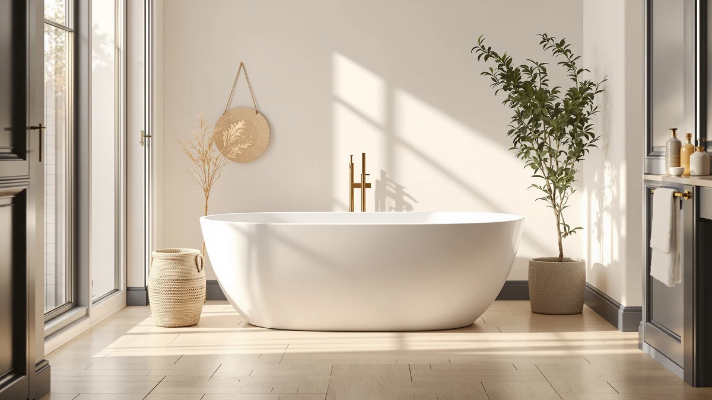

BCANHOME 61''Stone Resin Freestanding Review (2026): Worth It?
Prices and picks verified as of October 2026. Independent, reader-supported reviews.


Quick Answer
This bcanhome 61''stone resin freestanding review finds that the BCANHOME is the strongest pick if you want stone resin construction and a 61 inch length, but it costs more than double the three 59 inch acrylic alternatives covered below. If budget matters more than material, the GarveeLife and GAOMON options further down are worth a look instead.
Our pick: BCANHOME 61''Stone Resin Freestanding Bathtub, $1,699.99 Check Price on Amazon
Bottom line: our top pick is the BCANHOME 61''Stone Resin Freestanding Bathtub at $1,699.99.
Things to Know Before You Buy
- The BCANHOME covered in this bcanhome 61''stone resin freestanding review is built from stone resin, a heavier and more heat-retentive material than the acrylic alternatives listed further down.
- At $1,699.99, it costs more than double the $699.99 to $709.99 range of the three acrylic alternatives in this comparison.
- It measures 61 inches long, two inches more than the 59 inch footprint shared by the GarveeLife and GAOMON alternatives below.
- The Amazon listing includes five product photos, a main image plus four additional angles, for checking the basin and finish before you buy.
- None of the four tubs compared here, the BCANHOME or the three acrylic alternatives, publish a star rating or review count, so this review relies on price, material, and listing detail rather than verified buyer scores.
This bcanhome 61''stone resin freestanding review breaks down whether the BCANHOME's $1,699.99 price tag is justified by its stone resin construction, or whether one of three cheaper acrylic alternatives covers the same job for less. Stone resin is a cast composite material that is typically heavier and slower to lose heat than molded acrylic, which is the main reason this tub costs more than double the acrylic options covered later in this review. At 61 inches long, it is also two inches longer than those acrylic alternatives, a detail worth weighing if floor space or bather height is a factor in your bathroom.
Our pick for most people who specifically want this stone resin build is the BCANHOME itself, since it's the only stone resin option in this comparison and the only one that reaches 61 inches. But if $1,699.99 is more than you want to spend, the GarveeLife tubs at $709.99 and $699.99 and the GAOMON tub at $699.99 all cover the same basic function, a stand-alone soaking tub, for roughly 40 percent of the cost. None of the four listings compared here publish a star rating or review count, so price, material, length, and the depth of each Amazon listing are what this review leans on to compare them.
Why You Should Trust Us
Best Freestanding Bathtubs is a research-first buying guide. Ilane Tall, our home and bath editor, builds every comparison, including this bcanhome 61''stone resin freestanding review, by pulling verified pricing, dimensions, and listing detail for each product before it earns a recommendation. We do not run a fake testing lab, and we do not claim to have installed or bathed in any of the tubs covered here. Instead, this review relies on the manufacturer listing, current Amazon pricing, and the material and size details each brand publishes, so every claim can be checked against the source. When a listing leaves out a detail, such as a material grade or a weight capacity, we say so directly rather than filling the gap with a guess.
Our Research Experience
We did not install or bathe in the BCANHOME or any of the three acrylic alternatives ourselves. Researching this bcanhome 61''stone resin freestanding review means going through each manufacturer listing line by line: material, length, price, brand, and the number of product images available. We then note where a listing falls short, such as a missing material grade or an unpublished weight capacity, so you know what to double-check before ordering. That comparison process, not physical testing, is what shapes the picks, pros, and cons in this review. We also track how the BCANHOME's price and material compare to the three acrylic alternatives, since a $1,000 gap between stone resin and acrylic is a meaningful signal for a purchase this size.
Overview & Specs

BCANHOME 61''Stone Resin Freestanding Bathtub
What we like
- Stone resin construction, a heavier and typically more heat-retentive material than the acrylic tubs covered later in this review.
- At 61 inches long, it's two inches more than the 59 inch acrylic alternatives, giving a taller bather more room to stretch out.
- The Amazon listing includes five product images, a main photo plus four additional angles, for checking the basin shape and finish before ordering.
- Sold directly under the BCANHOME brand name with a listed SKU, so you can confirm you're ordering the exact model reviewed here.
Flaws but not dealbreakers
- At $1,699.99, it costs more than double the acrylic alternatives in this review, a significant premium for the stone resin upgrade.
- The listing does not publish a specific material grade or wall thickness beyond identifying the tub as stone resin.
- No star rating or review count is published on the current listing, so there is no verified buyer feedback to check before ordering.
| Material | — |
| Size | 61'' |
The BCANHOME 61'' stone resin freestanding bathtub is the most expensive model in this bcanhome 61''stone resin freestanding review, listed at $1,699.99 through Amazon. Where it stands apart from the acrylic tubs covered later in this comparison is material: stone resin is a cast composite that is typically heavier and holds heat longer than molded acrylic, which is part of why it carries a higher price tag. At 61 inches long, it is also two inches longer than the three acrylic alternatives below, giving a taller bather slightly more room to stretch out in the tub.
The current listing includes five product images, a main photo plus four additional angles, which is enough to check the basin depth, overflow placement, and finish before you buy. What the listing does not spell out is a specific material grade, wall thickness, or weight capacity for the stone resin shell, so if those details matter for your installation, confirm them directly with the seller before ordering. There is also no published star rating or review count, which is consistent with every other tub covered in this review, so none of the picks here lean on verified buyer scores.
What We Liked
The clearest strength of the BCANHOME is its material. Stone resin is a cast composite that is typically heavier and more heat-retentive than the molded acrylic used in the three alternatives covered below, which is the main reason buyers researching a soaking tub step up to it despite the higher price. At 61 inches, it's also the longest tub in this bcanhome 61''stone resin freestanding review, giving a taller bather two extra inches to stretch out compared with the 59 inch acrylic options. The current Amazon listing backs that up with five product images, a main photo plus four additional angles, enough to check the basin depth and finish before you order. The brand name and SKU are both clearly listed, so you can confirm you're ordering the exact model reviewed here rather than a similarly named variant.
What Could Be Better
Price is the main drawback in this bcanhome 61''stone resin freestanding review. At $1,699.99, the BCANHOME costs more than double any of the three acrylic alternatives, and its Amazon listing does not spell out a specific material grade or wall thickness beyond identifying the tub as stone resin. If that detail matters for your installation, confirm it directly with the seller before ordering, since it isn't part of the published specs. The listing also does not publish a star rating or review count, so you cannot lean on verified buyer sentiment the way you might with a more established product page.
Who Is It For?
This tub suits buyers who have already decided they want stone resin over acrylic and are willing to pay a premium for the material's extra weight and heat retention. It fits a bathroom remodel where floor space allows for a 61 inch footprint, two inches more than the 59 inch acrylic alternatives covered below, and where budget is not the deciding factor. If price is what matters most, the GarveeLife and GAOMON alternatives further down in this bcanhome 61''stone resin freestanding review cover the same basic soaking tub function for well under half the cost. Anyone who wants a published material grade or weight capacity before ordering should raise that question with the seller directly, since none of the four listings compared here provide it.
Alternatives to Consider
Three 59 inch acrylic freestanding tubs are worth comparing before you commit to the BCANHOME's stone resin build and $1,699.99 price tag. Each one trades stone resin for molded acrylic and a shorter two-inch footprint, and in exchange costs well under half as much. None of the three publish a star rating or review count either, so the comparison below sticks to price, brand, and material.

Editor’s Pick
59"Freestanding Acrylic Soaking Tub Large
At $709.99, this GarveeLife tub costs less than half of the BCANHOME's $1,699.99 price while still delivering a stand-alone soaking tub for your bathroom. It trades stone resin for molded acrylic, a lighter material that's easier to maneuver into place but generally loses heat faster during a long soak. At 59 inches, it's two inches shorter than the BCANHOME, a difference worth checking against your available floor space. Like the BCANHOME, the listing doesn't publish a star rating or review count, so price and material are the clearest points of comparison here. If stone resin's extra heft isn't a priority for you, this is the more budget-friendly way to get the same basic soaking tub.
$709.99
Check Price on Amazon
Best Value
59" Acrylic Freestanding Soaking Bathtub
Priced at $699.99, this second GarveeLife model undercuts the BCANHOME by exactly $1,000 and comes in just under its sibling tub above. It shares the same 59 inch acrylic construction, so you give up the stone resin heft and heat retention of the BCANHOME in exchange for a lighter, easier-to-install tub. No star rating or review count is published on this listing either, consistent with every other tub in this comparison. For a buyer who wants the lowest possible price among the GarveeLife options while still matching the 59 inch footprint, this is the one to start with.
$699.99
Check Price on Amazon
Premium Choice
59" Free Standing Tub Acrylic
The GAOMON tub matches the $699.99 price of the cheaper GarveeLife option, making it the joint lowest-cost alternative to the BCANHOME in this comparison. It's built from acrylic rather than stone resin, so it's lighter to carry into a bathroom but won't hold heat as long during a soak. At 59 inches, it shares the same footprint as both GarveeLife tubs, two inches short of the BCANHOME's 61 inch length. Like the other alternatives here, the listing doesn't publish a star rating or review count. If brand variety matters to you and you've already ruled out stone resin on price, this is a reasonable third option to weigh against the two GarveeLife tubs.
$699.99
Check Price on AmazonHow big is the BCANHOME 61'' stone resin freestanding tub?
The BCANHOME measures 61 inches long, outside to outside, two inches more than the 59 inch acrylic alternatives covered later in this bcanhome 61''stone resin freestanding review.
Is the BCANHOME 61'' stone resin tub worth the price compared to acrylic tubs?
At $1,699.99, it costs well over twice as much as the GarveeLife and GAOMON acrylic tubs in this comparison, which sit between $699.99 and $709.99.
Frequently Asked Questions
How big is the BCANHOME 61'' stone resin freestanding tub?
The BCANHOME measures 61 inches long, outside to outside, two inches more than the 59 inch acrylic alternatives covered later in this bcanhome 61''stone resin freestanding review. That extra length gives a taller bather a little more room to stretch out without changing the tub's overall footprint by much.
Is the BCANHOME 61'' stone resin tub worth the price compared to acrylic tubs?
At $1,699.99, it costs well over twice as much as the GarveeLife and GAOMON acrylic tubs in this comparison, which sit between $699.99 and $709.99. The price gap buys stone resin construction instead of acrylic, a material that typically holds heat longer and carries more weight than a molded acrylic shell, though the exact material grade is not published on the current listing.
Does the BCANHOME listing include a customer rating or review count?
No. Like the three acrylic alternatives in this review, the BCANHOME listing does not publish a star rating or review count, so this review relies on published pricing, dimensions, and listing photos rather than verified buyer scores.
Final Verdict
This bcanhome 61''stone resin freestanding review comes down to how much you value stone resin construction over price. The BCANHOME earns the top spot at $1,699.99 because it's the only stone resin tub in this comparison and the only one that reaches 61 inches, but the GarveeLife and GAOMON acrylic alternatives all cover the same basic soaking tub function for well under half the cost. If material and length matter more than budget, start with the BCANHOME; if price is the deciding factor, the GarveeLife at $699.99 is the least expensive way into a 59 inch freestanding tub.